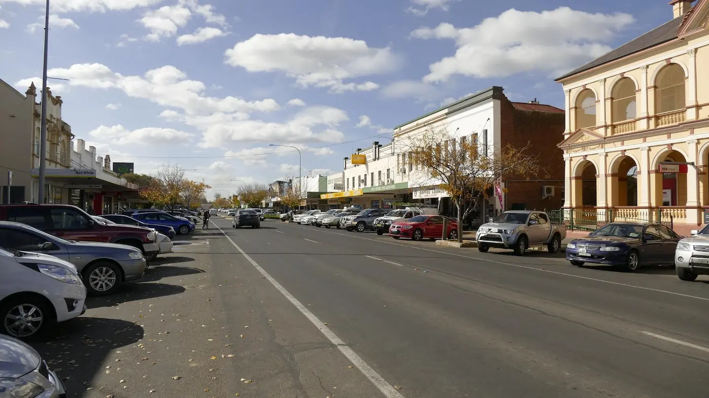

COOTAMUNDRA NSW
Website Design for Cootamundra Businesses
We build simple, high-performing websites that help businesses in Cootamundra get found on Google and turn visitors into real enquiries.
Get a QuoteWebsite Design in Cootamundra NSW
We build fast, mobile-friendly websites for businesses in Cootamundra and surrounding regional NSW areas — designed to help local businesses get found on Google and generate real enquiries.
In a regional town like Cootamundra, your website often creates the first impression customers have of your business. Whether someone is searching for a tradie, café, local service or small business, they expect a website that is clear, modern and easy to use.
Many small business websites struggle because they’re outdated, slow, difficult to navigate or not appearing properly in Google search results. We focus on building clean, professional websites that improve visibility, build trust and help turn website visitors into real customers.
Crane Platform Labs works with local businesses across regional NSW, creating practical websites that are fast-loading, mobile-friendly and built with strong SEO foundations from the start.

LOCAL BUSINESSES
Websites Built for Regional NSW Businesses
We work with businesses across Cootamundra and regional NSW, creating modern websites that help local businesses build trust, improve Google visibility and generate enquiries.
Tradies
Websites for builders, plumbers, electricians, landscapers, concreters and local trades that rely on being found quickly online.
Small Businesses
Mobile-friendly websites for cafés, retail stores, beauty businesses and local companies across Cootamundra and surrounding areas.
Service Businesses
Professional websites for mechanics, cleaners, consultants, health services, trainers and other local service providers.
WHAT YOU GET
Websites Designed to Generate Enquiries
Every website is built with a focus on speed, mobile usability, local SEO and helping businesses across Cootamundra build trust online.
Built for Google
Clean website structure and SEO foundations designed to help your business appear in local Google searches.
Mobile-Friendly
Designed for phones and tablets where most customers are now searching for local businesses.
Fast & Professional
Lightweight websites that load quickly, look modern and help build trust with potential customers.
Built for Enquiries
Clear layouts and strong calls-to-action focused on helping customers contact your business easily.
Simple Process
Straightforward website design without confusing agency jargon or overly complicated systems.
Regional NSW Support
Local support for businesses across Cootamundra and surrounding regional NSW communities.
REGIONAL NSW
Local Website Design for Regional Businesses
Crane Platform Labs works with businesses across regional NSW, building modern websites designed to help local businesses improve Google visibility and generate real enquiries.
We understand how regional businesses operate and what customers expect when searching online. Whether you're a tradie, café, local service provider or small business, your website needs to be clear, fast and easy to use.
Instead of complicated agency processes and bloated websites, we focus on practical websites that load quickly, work properly on mobile devices and help customers contact your business easily.
We work with businesses across Cootamundra, Junee, Temora, Wagga Wagga, Griffith and surrounding regional NSW areas.
AFFORDABLE WEBSITE DESIGN
Affordable Website Design for Cootamundra Businesses
Crane Platform Labs builds affordable, fast and mobile-friendly websites for tradies, mechanics, cafes and small businesses across Cootamundra and regional NSW.
In smaller regional communities like Cootamundra, trust and visibility matter. Customers often search online before making contact, meaning your website needs to clearly explain your services, work properly on mobile devices and help your business appear professional online.
We build clean, SEO-focused websites designed to help Cootamundra businesses improve their Google visibility, generate more local enquiries and compete online without expensive agency pricing or unnecessary complexity.

Plumber Websites
Fast, mobile-friendly plumbing websites designed to help plumbers generate more local enquiries from Google.
View Plumber Websites
Electrician Websites
Professional electrician websites built for local Google searches and regional NSW electrical businesses.
View Electrician Websites
Builder Websites
Professional builder and construction websites designed to showcase projects and generate more local enquiries online.
View Builder Websites
Mechanic Websites
Automotive websites designed for mechanics and workshops wanting to improve visibility on Google and attract more local customers.
View Mechanic Websites
Cafe Websites
Professional cafe and hospitality websites designed to attract more local customers across regional NSW.
View Cafe WebsitesWhether you're a tradie, cafe owner, mechanic, builder or local business in Cootamundra, we build affordable websites designed to improve Google visibility, mobile usability and customer trust across regional NSW.
WEBSITE PERFORMANCE
Built For Performance, Accessibility & SEO
Crane Platform Labs builds fast, mobile-friendly and SEO-focused websites designed to improve Google visibility, accessibility, usability and customer trust across regional NSW.
Modern websites should not only look professional but also perform properly across Google Search, mobile devices and modern accessibility standards.
Our websites are built using clean semantic HTML, responsive layouts, lightweight code and SEO-friendly structure designed to support fast loading performance, mobile usability and long-term online visibility.
From tourism websites and local business websites to tradie and regional NSW service websites, we focus on balancing modern design with accessibility, usability, SEO and modern web best practices.
Learn why website performance, accessibility, mobile usability and SEO now play a major role in Google rankings, customer experience and long-term business growth online.

READY TO START?
Get a Website That Helps Your Business Get Found
If you're in Cootamundra or surrounding regional NSW areas and need a fast, professional website designed to generate enquiries, get in touch for a simple, no-pressure chat.
Crane Platform Labs builds mobile-friendly websites for tradies, cafés, service businesses and small local companies looking to improve their online presence and Google visibility.
Crane Platform Labs • Regional NSW Website Design
ABN: 41 946 218 773